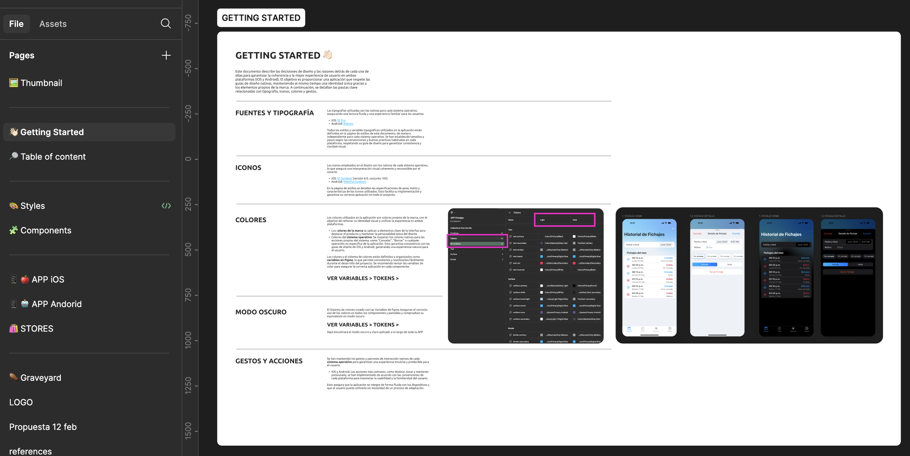
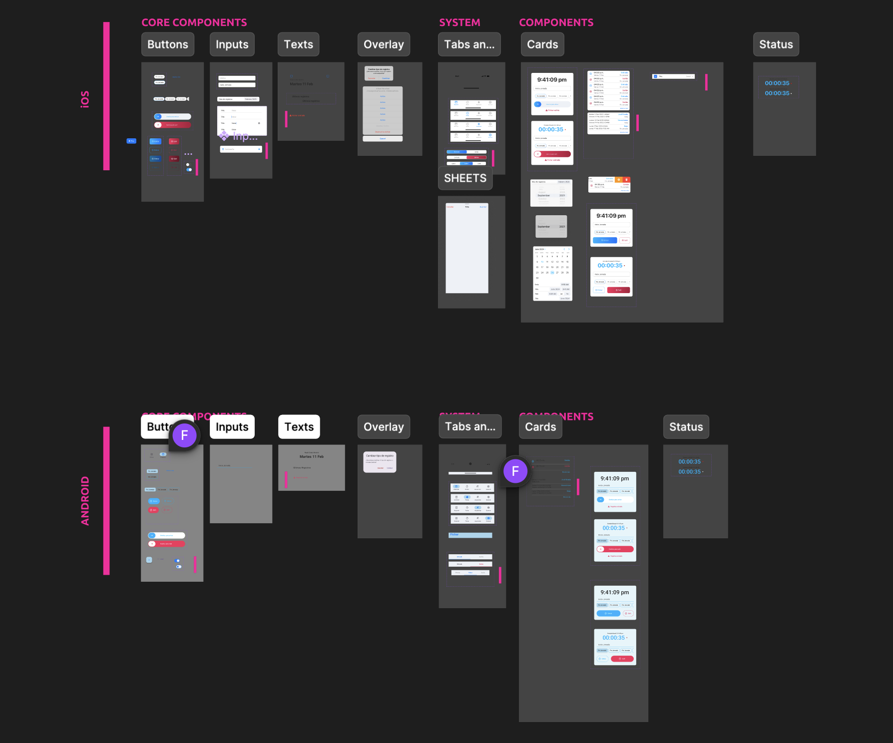
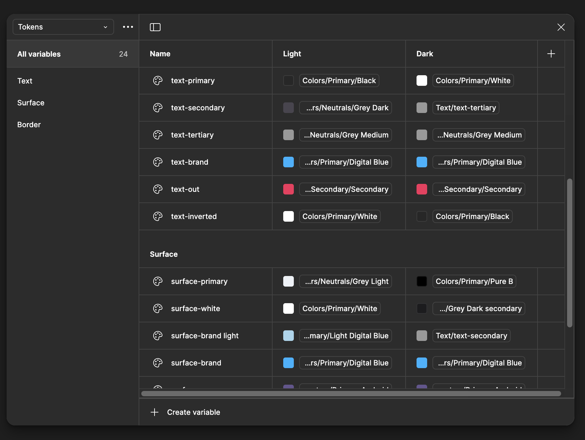
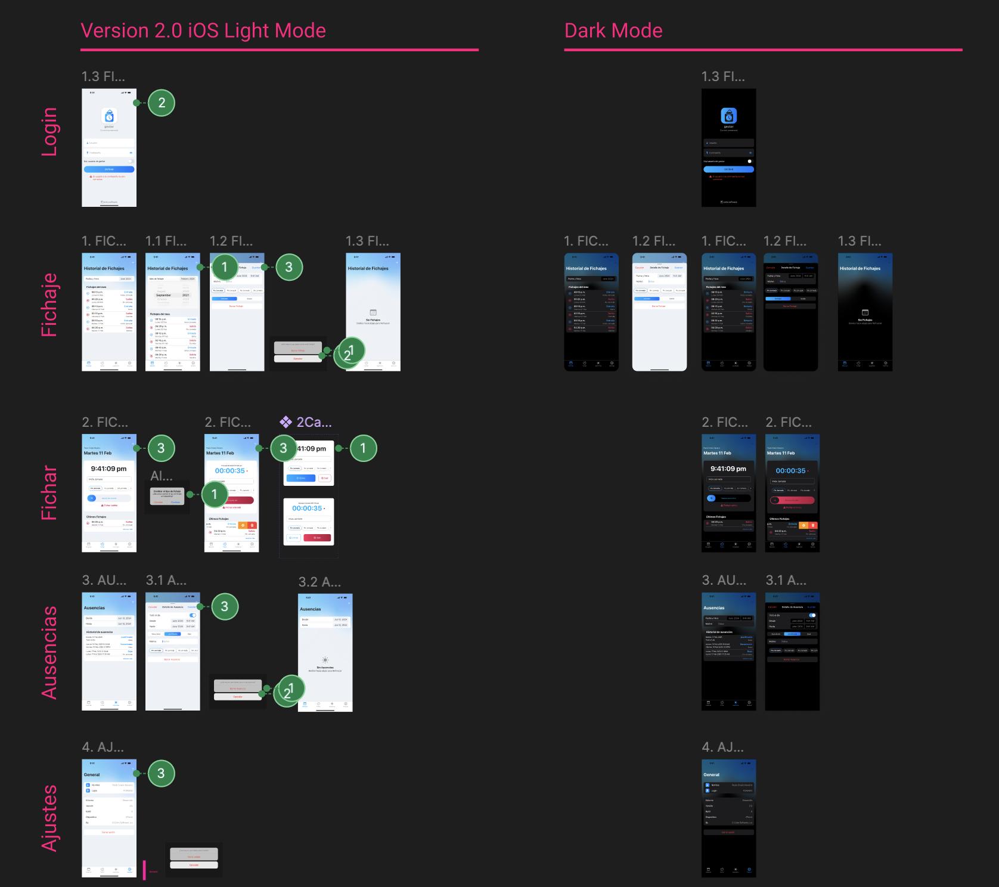
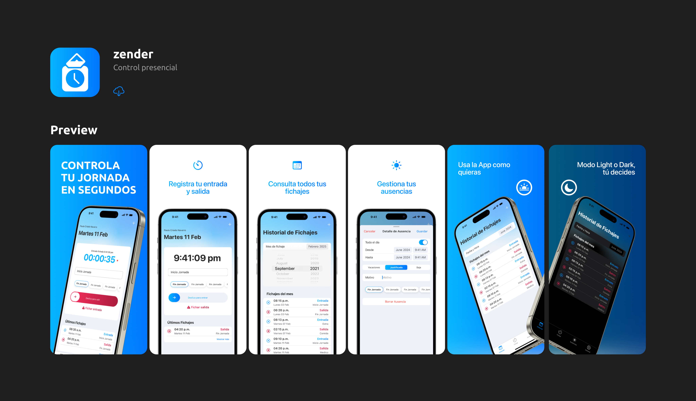

01 — Challenge
The Challenge
ZenderBox is an international locker service operating across Latin America. The existing app had an outdated visual identity, unclear navigation, and poor information hierarchy — yet a full rebuild wasn't an option. The redesign had to stay within the existing technical architecture without adding complexity to the codebase.


The core constraint: deliver a modern, intuitive app that feels completely new — without modifying the underlying architecture. Every design decision had to be technically feasible within the existing system.
02 — Requirements
Key Project Requirements

- Modern visual identity aligned with ZenderBox brand evolution
- Technically feasible redesign within existing code architecture
- Improved UX structure with clearer navigation and hierarchy
- Scalable design system with semantic tokens
- Visual status signalling system for package states
- Faster user comprehension of package status and actions
03 — Process
My UX Process
UX/UI Audit
Comprehensive heuristic evaluation of the existing app — identified navigation issues, hierarchy problems, and usability gaps.
Structural Reorganisation
Redesigned the information architecture: renamed sections, regrouped features, and simplified the tab bar navigation.
Naming & Content Strategy
Rewrote all microcopy, labels, and section names to be clear, consistent, and user-centric.
Design System Creation
Built a new mobile-only design system (Plus Jakarta Sans, semantic color tokens, 430px canvas) compatible with existing tech.
Visual Hierarchy & Signalling
Designed a color-coded package state system: En tienda · En bodega · Despachado · En camino · Entregado.
Branding & Market Readiness
Updated the visual language to position ZenderBox competitively in its markets with a fresh, trustworthy identity.

04 — Results
Results and Deliverables
- Fully redesigned app — modern, intuitive, and brand-aligned
- New design system with semantic tokens ready for development
- Improved navigation reducing user confusion and drop-off
- Clear visual package state signalling understood at a glance
- Stronger product experience without architectural changes
